개요 문서 · 탭 2개
개요 · 학회 수확 (IROS 2026)
travplan의 리서치는 이 개요와, 파이프라인 순서의 네 주제 문서, 두 보조 문서로 나뉜다. 주제 문서는 인식, Planner, Controller·안전, 시뮬레이션이고, 보조 문서는 여러 논문이 함께 쓰는 수식(배경·수식)과 전체 목록(참고문헌)이다. 각 주제 문서의 첫 탭은 그 분야의 계보다. 분야를 연 마일스톤에서 2026년 최신(SOTA)까지 한 표로 보여 주고, 공개 모델(HuggingFace)과 코드(GitHub) 현황을 함께 둔다. 그다음 탭들이 세부 주제별 설명이다.
각 방식은 같은 순서로 소개한다. 한 줄 요약으로 무엇인지 말하고, 동작 방식을 설명하고, travplan에 주는 의미로 마무리한다. 논문 그림에는 무엇을 보여주는지 한 줄 설명을 붙였다. 방법과 수식은 그림 뒤의 "자세히" 토글에 있다. 노란 강조는 그 절에서 가장 먼저 기억할 문장이다.
이 문서의 탭은 둘이다. 개요 탭은 문서 지도, 전체 연표, costmap의 한계를 다룬다. 학회 수확 탭은 IROS 2026에서 travplan의 열린 질문에 걸리는 논문을 모으고, 그중 다섯 편을 그림과 함께 자세히 읽는다.
센서(카메라/LiDAR) 동적 장애물(보행자)
│ │
▼ ▼
┌──────────────────┐ ┌───────────┐ ┌──────────────────┐ ┌──────────────────────────────┐
│ 인식 (§A) │──▶ │ TravMap │──▶ │ Planner (§B) │──▶ │ Controller · 안전 (§E, §C) │──▶ body twist
│ 지형 지도, 가통행성 │ │ [8,H,W] │ │ 학습 궤적 생성 │ │ MPPI 추종, 안전 필터 │
│ 동적 장애물 인식 │ └───────────┘ └──────────────────┘ └──────────────────────────────┘
└──────────────────┘
시뮬레이션 (§S): 운동학 시뮬 · Isaac Sim · 보도 장면 · sim-to-real 로 위 전체를 검증
문서 지도. 문서마다 첫 탭이 개요(분야 계보, 공개 코드·모델 현황, travplan의 위치)이고, 그 뒤가 주제별 탭이다. 절 번호는 문서를 옮겨도 그대로 둔다(인식 A, Planner B, Controller E와 안전 필터 C, 보행 갤러리 G, 시뮬레이션 S, 배경 0, 강화학습 R, 딥러닝 L, 모방 I, 참고문헌 D).
| 문서 | 탭과 절 | 무엇을 보나 | travplan에서 |
|---|---|---|---|
| 인식 (§A) | 지형 지도·Occupancy(A.1–A.5), Traversability(A.10), 시각 기반 모델(A.11), 동적 장애물(A.12), 예측·World model(A.6), 보행 로봇(A.7–A.9) | 센서에서 TravMap과 동적 장애물까지 | elevation mapping(P2.1), TravNet(TP-0010), 검출·추적 PoC(TP-0011) |
| 문서 | 탭과 절 | 무엇을 보나 | travplan에서 |
|---|---|---|---|
| Planner (§B) | 방법 — travplan과 고전 기준선(B.1, B.10), 학습 로컬 Planner(B.2–B.4, B.4b, B.7), 생성형 궤적(B.8.0, B.8), Foundation·VLA·언어(B.6, B.6b–B.6d), 위험 인지·로컬 내비(B.9). 현황 — 자율주행 자동차(B.12.1, B.11, B.13), 로봇별 공개 스택(B.12), ETH RSL 계보(B.14), NVIDIA·DeepMind·취리히·RAI(B.16, B.16.1–B.16.4), 다른 연구실·휴머노이드 주행(B.16.5–B.16.8). 종합 — 분야별 지형(B.18), 최근 연구 비교(B.17) | 경로와 시간 인덱스 궤적 생성 | GuidancePlanner, LearnedPlanner, Planner D |
| Controller·안전 (§E, §C) | MPPI 계열(E.1, B.5), 학습 동역학·적응(E, E.2), 안전 필터(C.1–C.4) | 궤적 추종과 안전 | MPPIController(유지보수), 시간가변 비용 레이어, CVaR-BF 후보 |
| 시뮬레이션 (§S) | 물리 엔진(S.1), 보도·도시(S.2), 보행자(S.3), 센서·렌더링(S.4), 지형·바퀴(S.5), sim-to-real(S.6), travplan 권고(S.7) | 검증 환경의 네 층(L0–L3) | 운동학 시뮬(L0), Isaac Sim(L1) |
| 배경·수식 (§0) | 인식(0.1, 0.8, 0.9, 0.10, 0.14), Planner·학습(0.5, 0.6, 0.7, 0.12, 0.13), 제어·안전(0.2, 0.3, 0.4, 0.11) | 여러 논문이 공유하는 수식 | 각 토글이 "배경 0.N"으로 가리킨다 |
| 강화학습 (§R) | 개요(R.0), 문제 설정·모방(R.1–R.2), 정책 기울기(R.3–R.5), 가치 기반(R.6), 추론으로서의 제어(R.7–R.8, R.17), 모델 기반(R.9, R.18), 오프라인·탐색(R.10–R.11), LLM·생성 정책·안전(R.12–R.13), 이론·다과제(R.14–R.15), travplan에서(R.16) | 버클리 CS 185/285의 강의마다 풀어 쓴 설명과 영상(2023, 2018), 확산·flow 정책의 RL | TP-0066 후학습(AWR, 그룹 이점), TP-0128 진화 전략, MPPI(제어를 추론으로), NMPC(iLQR 계열) |
| 딥러닝 (§L) | 개요(L.0), 기초(L.1–L.3), 구조(L.4–L.8), 생성 모델(L.9–L.13), 자기지도·규모(L.14–L.18), 멀티모달·로봇(L.19–L.21), travplan에서(L.22) | 교재 Understanding Deep Learning과 MIT 6.S184·Stanford CS336을 뼈대로 한 딥러닝 개념. 장난감 문제를 실제로 풀어 그린 그림 | Planner D(flow matching), Joint Planner(DiT식 transformer), TravNet, TinyPolicy의 구조와 학습 |
| 보행 갤러리 (§G) | 사족보행(G.1–G.10), 휴머노이드(G.11–G.16), 다몸체(G.17), travplan에서(G.18) | 사족·휴머노이드 보행의 마일스톤 논문 17편을 한 편에 카드 하나로. 초록 전문 번역, 원문 그림 번역 설명, 방법·결과 표, 왜 마일스톤인가 | 스워브 plant 지연(TP-0150), 교사–학생 DAgger(TP-0075·0055), belief 지도의 sigma, Planner·Controller 경계, sim-to-real 프로토콜(TP-0043) |
| 문서 | 탭과 절 | 무엇을 보나 | travplan에서 |
|---|---|---|---|
| 모방 (§I) | 개요(I.0), 데이터·리타기팅(I.1–I.6), 동작 추종(I.7–I.9), 동작 사전(I.15–I.19), 범용 추종기(I.10–I.12), 위 층(I.13), travplan에서(I.14) | 사람 동작 데이터와 라이선스, 리타기팅(로봇 쪽 고전, GMR·OmniRetarget), 동작 추종(SAMCON·DeepMimic에서 BeyondMimic까지의 계보), 동작 사전(AMP·ADD·SMP와 기준 구현 MimicKit), 범용 추종기(SONIC, SuperMimic)와 2026년 후속, 공개 코드. 장난감 문제를 풀어 그린 그림 | 학습 절차(적응 표집, 교사–학생, world model을 통한 정책 기울기), RL 후학습 보상에 동작 사전을 넣는 가설, Planner·Controller 분리, Playground 휴머노이드 |
| 참고문헌 (§D) | 인식(D.1–D.3b), Planner(D.0–D.5b), Controller·안전(D.6–D.7b), 강화학습(D.14), 딥러닝(D.15), 모방(D.16), 연구 그룹(D.13), 로코모션·데이터·산업(D.8–D.12) | 전체 목록, 발표처, 코드 링크 | — |
전체 연표. 분야마다 흐름을 바꾼 연구를 한 표에 놓았다. 2023년 전후로 네 분야가 함께 "큰 사전학습 모델 + 생성형 출력"으로 옮겨 갔다. 인식은 시각 기반 모델로, Planner는 diffusion과 flow matching으로, Controller는 학습 world model로, 시뮬레이션은 GPU 병렬 학습과 사진 같은 렌더링으로 갔다. 각 이름의 설명은 해당 문서의 개요 탭과 본문에 있다.
| 연도 | 인식 | Planner | Controller·안전 | 시뮬레이션 |
|---|---|---|---|---|
| 1959–1997 | — | Dijkstra, A*, DWA | — | — |
| 2008–2014 | Robot-centric elevation mapping | Hybrid A*, TEB | — | — |
| 2015–2018 | Social GAN | Apollo EM planner | MPPI, 정보이론적 MPC, CBF-QP, HJ 도달 가능성, PETS, 예측 안전 필터 | Sorour 등, Domain Randomization, Dynamics Randomization |
| 2019–2020 | Lift-Splat-Shoot, RELLIS-3D, BADGR, 등속 모델, Trajectron++ | Nav2 | CBF 튜토리얼, 이산 CBF + MPC | Actuator net, ADR, Sim2Real Predictivity |
| 2021–2022 | BEVFormer, BEVFusion, MonoScene, elevation_mapping_cupy, ByteTrack, BoT-SORT | Diffuser, GNM, FAR Planner, PUTN | Robust MPPI, IKD, RMA, log-MPPI, SMPPI | Learning to Walk in Minutes, ART/ATK |
| 2023 | DINOv2, Grounding DINO, Occ3D, WVN, RT-DETR | iPlanner, ViNT, NoMaD, Diffusion Policy, MPD, UniAD, VAD, PDM-Closed, ArtPlanner | TD-MPC2, 안전 필터 통합 관점 | HuNavSim, Gazebo Harmonic |
| 연도 | 인식 | Planner | Controller·안전 | 시뮬레이션 |
|---|---|---|---|---|
| 2024 | Depth Anything V2, SAM 2, V-STRONG, RoadRunner, YOLOv10, D-FINE | ViPlanner, OpenVLA, π0, NaVILA, CityWalker, DiffusionDrive, NAVSIM, Hydra-MDP | MPPI-Generic | MetaUrban, Arena 4.0, X-Mobility, Navigation World Models |
| 2025 | DINOv3, Depth Anything 3, SAM 3, RF-DETR, MoFlow | Diffusion Planner, GoalFlow, NavDP, CaRL, Alpamayo, MolmoAct, VAMOS, FPO | CVaR-BF, DRA-MPPI | Isaac Lab, MuJoCo Playground, URBAN-SIM, UrbanVerse, COMPASS, Cosmos |
| 2026 | WalkOCC, ViTA, CATNAV, PIVOT, RayOcc, 4D panoptic occupancy tracking, EgoHTR | AgniNav, MILER, PC-Diffuser, JPPD, GRACE, Can VFMs Navigate?, Click-and-Traverse, TNT, DYNA-2.1 | ProxPI, Predictive Semantic Safety, HDVIO2.0, OGM-CBF, Safe Score Matching, PolyStep | Isaac Sim 6.x, Newton, SidewalkBench, NavIsaacLab |
ROS/ROS2 costmap의 한계 — travplan이 TravMap을 쓰는 이유
다섯 가지 한계
업스트림도 같은 결론을 적어 두었다
TravMap의 여덟 채널이 어느 한계에 답하나
그래도 costmap을 버리지는 않는다
travplan은 지금도 ROS 2 위에서 돌고 Nav2 생태계를 쓴다. 그런데 공통 표현만은 costmap_2d가 아니라
TravMap[8,H,W]다. 왜 갈라섰는지를 여기에 적는다. 결론부터: costmap은 "여기 무언가 있나"를 답하는 자료구조이고,
보도 주행이 물어야 하는 것은 "여기를 지날 수 있나"다.
먼저 costmap이 무엇인지. nav2_costmap_2d는 2D 격자에 레이어를 쌓는다. static(정적 지도), obstacle(센서로
mark/clear), voxel(3D로 쌓았다가 2D로 투영), inflation(장애물 주위를 로봇 반지름만큼 부풀림)이다. 각 셀은
0–255의 비용 하나를 갖는다.
① 점유/비점유의 이분법. 셀은 "비었다 / 찼다 / 모른다"와 inflation 비용을 갖는다. "지날 수는 있지만 비싼 곳"을 표현할 자리가 없다. 경사 8°의 램프와 평지가 같은 값이고, 자갈과 아스팔트가 같은 값이다. 경사·거칠기를 넣으려면 직접 레이어를 만들어야 하는데, 그러면 그 레이어의 의미는 더 이상 표준이 아니다.
② 2D 투영이 높이를 무너뜨린다. 이것이 보도에서 가장 아프다. 세 가지가 함께 무너진다.
③ 불확실성이 없다. 셀은 비용 하나를 갖는다. "얼마나 확신하는가"를 담을 곳이 없다. 미관측은 플래그이지
분포가 아니다. 그래서 "못 본 곳에서는 천천히"를 표현할 수 없고, 그 결정은 전부 플래너·제어기 쪽 임시 규칙이 된다.
TravMap의 SIGMA 채널이 이 자리다.
④ inflation은 고정된 기하 연산이다. 로봇 반지름과 감쇠 계수로 정해지고, 속도·지형·불확실성에 따라 변하지 않는다. Controller 문서 F.5의 4족 확률 제약 MPC가 "손으로 맞춘 제약 조이기"를 이겼다고 보고하는데, costmap의 inflation이 바로 그 손으로 맞춘 조이기의 전형이다. travplan의 TP-0069가 겨냥하는 것도 같다.
⑤ 지면 평면을 가정한다. 투영 기준면이 평평하다고 보므로, 경사면에서는 지면 자체가 장애물로 마킹된다. 실외 적용에서 흔한 실패이고, 농업 쪽 보고에서는 로봇이 밟고 지나갈 수 있는 키 큰 풀이 장애물로 찍혀 경로가 길어지거나 주행이 중단됐다(arXiv:2407.18535).
이것은 바깥의 비판이 아니다. Nav2 저장소의 이슈 #1278 Redesign Environmental Representation에서 메인테이너가 2019년에 이렇게 썼고, 그 이슈는 지금도 열려 있다.
오늘 우리는 독립된 셀들의 2D costmap을 쓴다. 싸고 쓸모 있는 방법이지만, 당분간 우리를 2.5D 땅에 묶어 둘 것이다. (…) 경사를 3D로 다루면 램프나 언덕, 내려가는 계단이나 낙차를 표현할 수 있다. (…) 비었나 찼나를 따지는 대신 이제 이렇게 생각하자 — 여기를 지날 수 있나.
travplan의 TravMap은 그 제안을 실제로 구현한 형태에 가깝다. 제안된 "gradient map"이 GRAD_X·GRAD_Y·SLOPE이고,
"지날 수 있나"가 COST다.
| 채널 | 답하는 한계 |
|---|---|
ELEV |
② 높이를 버리지 않는다 |
GRAD_X, GRAD_Y, SLOPE |
①·⑤ 경사를 값으로 갖는다. 지면 평면을 가정하지 않는다 |
STEP |
② 연석 높이를 벽과 구분한다(max_step_m = 0.08) |
ROUGH |
① 자갈과 아스팔트를 구분한다 |
COST |
① "지날 수 있나"를 연속값으로 |
SIGMA |
③ 얼마나 확신하는지 |
표현을 바꾼 것이지 생태계를 버린 것이 아니다. Nav2의 행동 트리, 복구 행동, 전역 플래너(Smac), 그리고 실물 배포의 안전 장치는 그대로 값이 있다. travplan이 Nav2와 겹치는 지점과 비교 기준은 Planner 문서 B.12.4에 정리해 두었다. 실물 배달로봇 스택(AntBot)도 Nav2 위에 있다. 바뀌는 것은 "무엇을 공통 표현으로 쓰는가" 하나다.
학회 수확 — IROS 2026 (피츠버그)
왜 이 다섯 편인가
골라 볼 다섯 편
다섯 편을 합쳐 보면
채택 논문 1,929편을 제목으로 훑어 travplan의 열린 질문에 걸리는 것만 골랐다(논문 색인). 세부는 각 주제 문서에 들어가고, 여기서는 지도와 자세히 볼 다섯 편을 둔다.
제목에 "sidewalk"가 들어간 논문이 한 편도 없다. 보도 배달로봇이라는 자리는 여전히 비어 있다. 가장 가까운 것은 험지(off-road)와 다리 로봇이고, 그 방법을 보도 규모로 옮기는 일은 travplan의 몫으로 남는다. 키워드별 편수는 terrain 41, traversability 9, off-road 8, elevation map 7, occupancy 11, MPPI 9, sidewalk 0이다.
| travplan의 열린 질문 | IROS 2026에서 걸리는 논문 | 어디에 |
|---|---|---|
| 기하만으로 매기는 비용의 한계(TP-0010, TP-0022) | TNT(508), Remember Your Driving Feel(1304), TravKAN(2427), Implicit Neural Representation of Terrain Traversability(4937) | 인식 A.10 |
| 가림과 미관측(TP-0031, TP-0044, TP-0047) | RayOcc(1720), OGM-CBF(3618), BEACON(3266), What's Hidden Matters(1569) | 인식 A.5, Controller C |
| 고도지도 위의 샘플링 제어(Controller) | Observation-Conditioned Rollout Allocation(3312), PA-MPPI(68), Value Function-Guided MPPI(3764) | Controller E.1, B.5 |
| 바퀴 제어와 계획–실행 간극(TP-0034, TP-0150) | MSC: Multi-Stage Caster-Aware Control(3480), CHUTNI(2438) | Planner B.12.4 |
| occupancy 표현과 추적 | Streaming Gaussian Encoding for 4D Panoptic Occupancy Tracking(2962, Best Paper 결선), OccTrack360(1298) | 인식 A.2 |
다섯 편은 위 표의 질문에서, 파이프라인의 층이 겹치지 않게, 우리 결정과 반대쪽 근거가 되는 것을 골랐다. 1,929편을 다 읽을 수는 없다. 그래서 2026-09-28에 제목·저자·세션으로 위 표를 먼저 만들고, 그 표에서 자세히 볼 것을 골랐다. 기준은 셋이다.
| 편 | 맡는 층 | 걸린 질문 | 우리와 다른 쪽 | 원문(2026-10-26 확인) |
|---|---|---|---|---|
| TNT(508) | 인식: 비용 규칙 | 기하 cost의 보수성(TP-0022, TP-0057) | 최댓값 규칙 대신 "못 간다"를 주행 기록으로 낮춘다 | arXiv 전문, 코드 없음 |
| POLT(1304) | 인식: 비용 갱신 | TravNet 자기지도 라벨(TP-0010, TP-0022), 마찰(TP-0059) | 오프라인 학습 대신 주행 중에 갱신한다 | 초록만, 본문 미공개 |
| OCRA(3312) | Controller: 표본 | 가림과 좁은 지도(TP-0031), plant 레벨 3 멈춤(TP-0151) | 못 본 칸을 비용뿐 아니라 표본 배분에도 쓴다 | 대학 저장소의 원고, 코드 없음 |
| MSC(3480) | Controller: 바퀴 | plant 지연(TP-0149, TP-0150), 스워브 모듈(TP-0034) | 지연을 rollout에 넣는 대신 하위 학습으로 흡수한다 | arXiv 전문, 코드 없음 |
| SGE(2962)와 OccTrack360(1298) | 인식: 표현과 평가 | 미관측과 지도 평가(TP-0053) | 칸마다 관측 신뢰도를 시간에 걸쳐 쌓는다(우리 σ에는 시간이 없다) | 둘 다 arXiv 전문과 코드 |
가림 줄은 따로 고르지 않았다. RayOcc와 OGM-CBF는 아래 마무리에서 비교 대상으로만 든다. 같은 문제를 OCRA(못 본 칸을 표본 배분에)와 OccTrack360(못 본 칸을 평가 범위에)이 다른 층에서 다룬다. 두 논문의 원문은 아직 확인하지 않았다.
원문을 다시 읽고 세 곳을 고쳤다. 처음 고를 때는 제목·초록·세션만 봤다. 2026-10-26에 원문을 읽으니 아래가 처음 요약과 달랐다.
POLT는 본문이 공개되면 다시 본다. 카드는 원문, 한 줄 요약, 동작 방식, 결과, travplan에 주는 의미 순서다. 방법과 수식은 카드 끝의 "자세히" 토글에 있다.
원문. Chenhui Pan·Aniket Datar(공동 1저자)·Anuj Pokhrel·Matthew Choulas·Mohammad Nazeri·Xuesu Xiao, George Mason University.
arXiv:2409.17479(2024-09, CC BY 4.0), 영상.
코드는 없다. 로봇 플랫폼만 RobotiXX/Verti-Wheelers 저장소로 공개돼 있다.
한 줄 요약. 기존 추정기가 "못 간다"로 자르는 바위 지형을, 그 패치가 지난 주행에서 차를 얼마나 기울이고 명령과 실제를 얼마나 어긋나게 했는지로 다시 매긴다. 사륜구동·독립 서스펜션·디퍼렌셜 잠금이 있는 바퀴 로봇은 차체만 한 바위도 넘는다. 갈 수 있다/없다로 자르면 그 능력을 버린다.
동작 방식. 1/10 크롤러 V4W를 실내 바위판(3.1 × 1.3 m, 최고 0.6 m)에서 139분 원격조종해 고도 지도 70,816장을 모았다. 지도의 패치마다 세 값을 만든다.
세 값을 가중합하고 진행 방위 다섯을 평균하면 패치 값이 된다. 배포 때는 고도 지도 한 장에서 14채널 지도를 한 번에 내는 재구성망만 돈다. MPPI는 TAL로 rollout하면서 이 지도로 분명히 못 가는 곳을 먼저 걸러 표본 공간을 줄인다. A*의 비용 지도로도 쓴다.
결과(Table I). 바위판의 한 코스에서 방법마다 10회 달렸다.
travplan에 주는 의미.
GeometricTraversability는 경사·턱·거칠기를 각 한계로 나눈 값의 최댓값을 쓴다. TNT는 가중합이고 진행 방위 다섯을 평균한다.
한 방향에서만 위험한 칸(옆으로 들어가면 기우는 경사)은 평균에 묻힌다. 보도에서는 이 평균을 그대로 가져오지 않는다.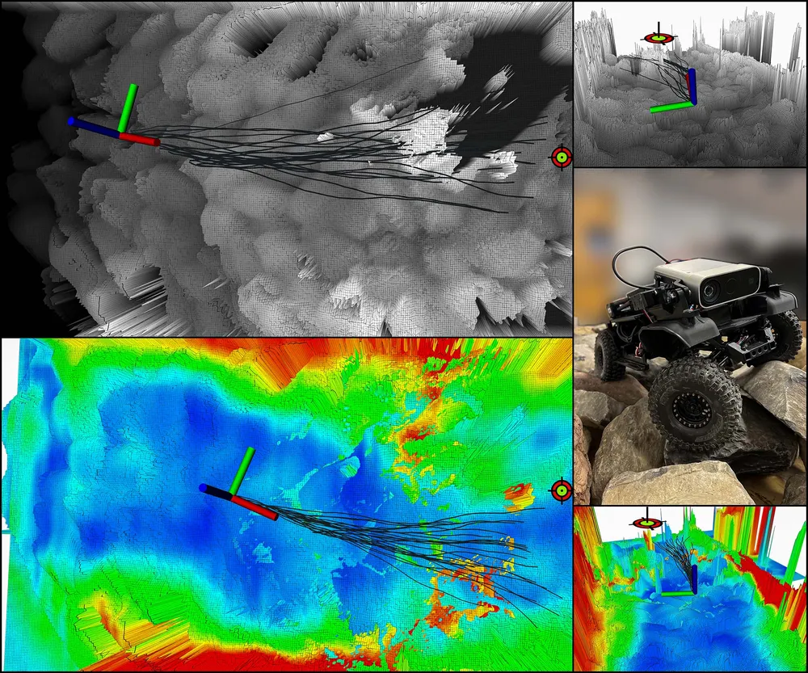
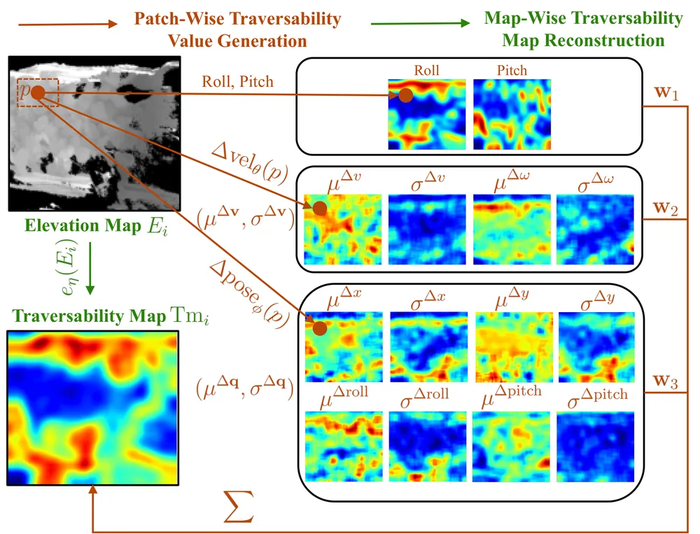
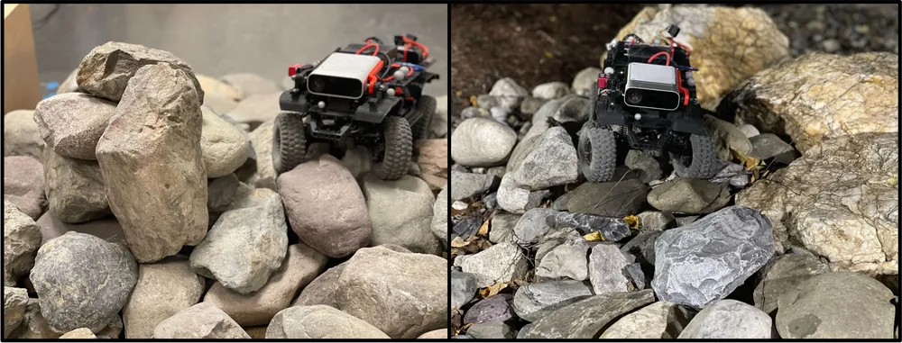
정적 roll·pitch. 바퀴 $i$ 아래 칸의 높이를 $h_i$, 두 바퀴 사이 거리를 $d_{i,j}$라 하면 아래와 같다.
$$\text{roll},\ \text{pitch} = \tfrac12 \Big\lVert \sum_{(i,j)\in\mathcal I} \arctan\frac{h_i-h_j}{d_{i,j}} \Big\rVert$$
바퀴 번호는 앞왼쪽 1, 뒤왼쪽 2, 뒤오른쪽 3, 앞오른쪽 4다. roll은 $\mathcal I=\{(1,4),(2,3)\}$, pitch는 $\{(1,2),(4,3)\}$이다. 이 식은 정적 기울기만 준다. 바퀴 반경과 턱 높이로 정해지는 "오를 수 있나"는 이 식에 없고, 아래의 속도 어긋남이 데이터로 잡는다.
속도 어긋남과 자세 예측 오차. $\Delta\mathbf v=\mathbf v_{\text{cmd}}-\mathbf v_{\text{actual}}$이고 $\mathbf v=(v,\omega)$다. 같은 패치라도 차의 상태에 따라 값이 달라서 분포로 배운다. 7층 CNN과 FC 3층이 패치 $p$에서 $(\mu^{\Delta\mathbf v},\sigma^{\Delta\mathbf v})$를 내고, 손실은 가우시안 NLL이다.
$$\mathcal L=\sum_i \tfrac12\Big(\log\sigma^2(p_i)+\frac{(\mu(p_i)-\Delta\mathbf v_i)^2}{\sigma^2(p_i)}\Big)$$
자세 쪽 $\Delta\mathbf q=\mathbf q_{\text{pred}}-\mathbf q_{\text{actual}}$는 TAL의 25스텝 예측과 실제의 차다. 성분은 x, y, roll, pitch다. yaw는 x·y와 겹치고 z는 정보가 적어 뺐다. 정답 속도와 자세는 OptiTrack에서 왔다. 모캡은 학습 데이터를 모을 때만 쓴다.
패치 값과 재구성.
$$\text{Tr}(p)=\mathbf w_1[\text{roll},\text{pitch}]^\top+\mathbf w_2[\mu^{\Delta\mathbf v},\sigma^{\Delta\mathbf v}]^\top+\mathbf w_3[\mu^{\Delta\mathbf q},\sigma^{\Delta\mathbf q}]^\top$$
가중치 값은 보고하지 않았다. 칸마다 진행 방위 $\Psi=\{-\pi/2,-\pi/4,0,\pi/4,\pi/2\}$로 패치를 잘라 평균한 값이 지도 값이다. 재구성망(잔차 연결이 있는 4층 CNN 인코더와 conv-transpose 3층)은 고도 지도에서 14채널 320 × 260 지도를 낸다(roll·pitch 2, 속도 4, 자세 8). 최종 지도는 14채널의 가중합이고, 가중치는 상황에 따라 바꿀 수 있다고 쓴다. 입력 고도 지도는 Azure Kinect 깊이에 elevation_mapping_cupy를 돌린 것이다. 칸 크기와 패치 크기는 적혀 있지 않다.
Planner와의 연결. MPPI가 TAL로 SE(3) rollout할 때 이 지도로 표본 분포를 치우치게 하고, 못 가는 곳을 먼저 걸러, 더 짧은 horizon으로 계획한다고 쓴다. 비용 항으로 넣는지 표본 분포를 바꾸는지는 식이 없다. A*에서는 지도를 평균 합성곱으로 31 × 25로 줄여 traversability 비용과 거리를 함께 최소화하고, DWA나 PID가 경로를 따른다.
… 이 토글의 나머지 블록 4개(문단·식·그림)는 대시보드 리서치 탭의 "자세히: TNT의 방법과 수식" 토글에 있다.
원문. Remember Your Driving Feel: Proprioception Based Online Learning for UGV Traversability across Complex Terrains. Zikang Xie·Binhan Du·Kexin Fei·Jian Li·Zhenping Sun·Shucheng Li·Xiaohui Li·Dewen Hu, 중국 국방과기대(NUDT). 2026-10-26 현재 본문이 공개되지 않았다. arXiv·Google Scholar·OpenAlex·GitHub에서 찾지 못했다. 아래는 IROS 프로그램에 실린 초록만으로 쓴 것이다.
한 줄 요약. 빙판과 물 고인 길은 평평해도 미끄럽고, 풀 덤불은 장애물처럼 보여도 지나갈 수 있다. 기하와 고정된 의미 라벨로는 지형의 역학적 성질을 담지 못한다는 것이 저자의 진단이다. POLT는 주행 중의 고유 감각(proprioception)으로 traversability를 배우고 예측한다.
동작 방식(초록 기준). 두 부분으로 된다.
초록은 외부 감각 기반 기준선과 온라인 학습 기반 기준선을 모두 이겼다고 쓴다. 시험 노면은 빙판, 물 고인 길, 풀 덤불이다. 어떤 신호(IMU 진동, 바퀴 슬립, 토크)를 쓰는지, 아직 밟지 않은 칸으로 어떻게 넓히는지, 수치가 얼마인지는 본문이 나와야 안다.
travplan에 주는 의미.
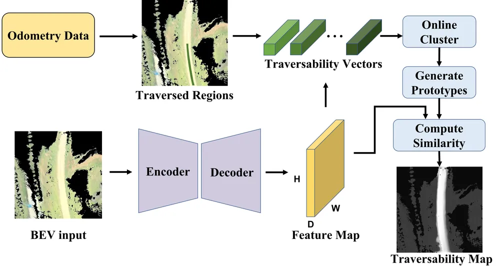
본문에서 확인할 것.
같은 그룹의 앞선 연구(arXiv:2504.12109, 2025-04). Yafeng Bu·Zhenping Sun·Xiaohui Li 등의 Self-Supervised Traversability Learning with Online Prototype Adaptation for Off-Road Autonomous Driving이다.
POLT가 비교한 "온라인 학습 기반 기준선"이 이 연구인지는 본문이 나와야 안다.
travplan에 주는 것. 프로토타입 갱신은 망 가중치를 고정한 채 판정 기준만 주행 중에 바꾼다. 무엇이 바뀌었는지 검사하기 쉬워서, TravNet에 온라인 갱신을 넣는다면 이쪽부터 시험한다. 바뀐 기준이 cost를 낮추는 쪽이면 TP-0057의 원칙대로 막는다.
원문. Observation-Conditioned Rollout Allocation for Sampling Model Predictive Control on Myopic Egocentric Elevation Maps. Luis Miguel Diaz-Pichardo·Anthony Mandow·Ricardo Vázquez-Martín, 말라가 대학 IMECH.UMA. arXiv에는 없고 대학 저장소 RIUMA에 IROS 원고 PDF가 있다(CC BY-NC-ND 4.0). 영상. 코드는 없다.
한 줄 요약. 로봇 중심 고도 지도가 좁고 못 본 칸이 많으면 여러 진행 방향이 다 그럴듯해 보인다. 그러면 균일하게 뿌린 rollout이 모호한 방향에 낭비되고, 진행 방향이 흔들린다(yaw dithering). OCRA는 rollout 총수는 그대로 두고, 학습한 정책이 지도를 보고 진행 방향 후보 사이에 예산만 옮긴다. 안전 판정은 끝까지 MPC가 쥔다.
동작 방식.
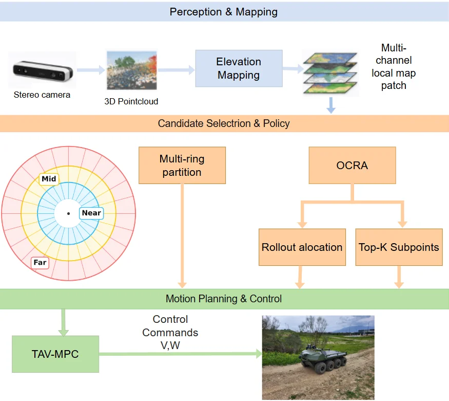
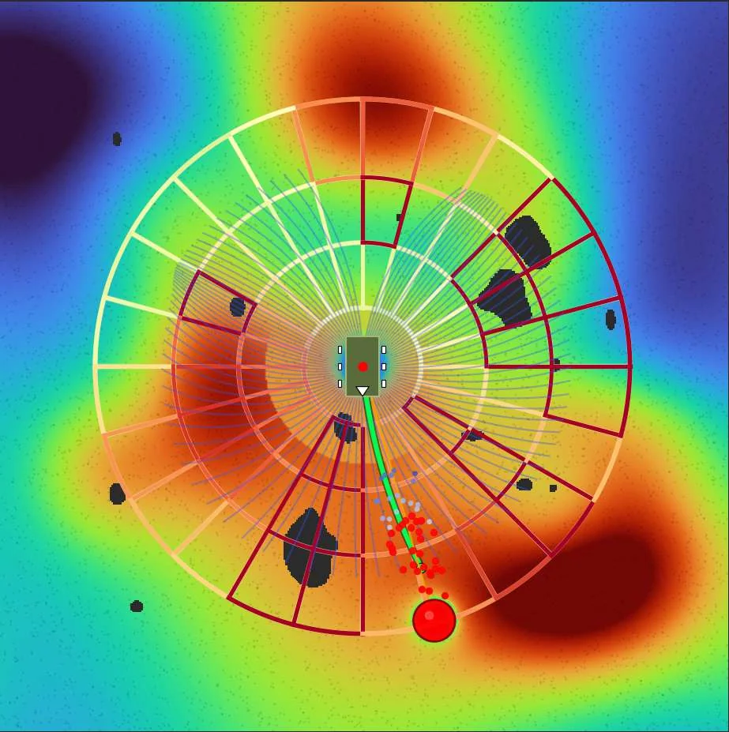
결과. 8륜 skid-steer UGV(2.53 × 1.54 m, 스테레오 깊이, ROS 2)로 쟀다. 시험장을 점군으로 다시 만든 Unity 지형의 두 코스(코스마다 10회)와 실제 코스 하나다. 같은 MPC에서 배분만 균일로 바꾼 판과 비교한다. 칸마다 앞이 OCRA, 뒤가 균일 배분이다.
| 코스 | 완주 시간(분) | 주행 거리(m) | 위반(100 m당) | 계산 시간 평균 / p95(ms) |
|---|---|---|---|---|
| A(시뮬) | 8.10 / 9.47 | 245.0 / 293.0 | 0.82 / 1.02 | 13.2 / 16.2 대 14.5 / 18.7 |
| B(시뮬) | 13.08 / 14.57 | 394.0 / 448.5 | 0.76 / 1.11 | A와 같게 적혀 있다 |
| C(실제) | 5.49 / 5.56 | 166.2 / 171.1 | 1.8 / 3.5 | 12.7 / 15.4 대 13.5 / 17.2 |
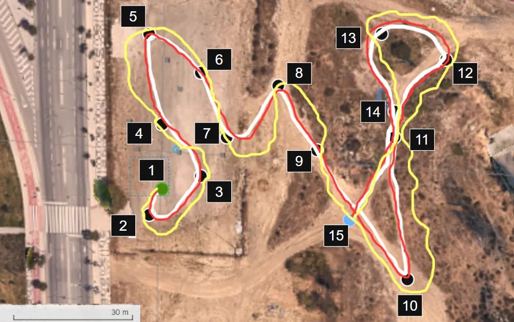
travplan에 주는 의미.
--unknown-near 1.5, 그림자 상한). OCRA는 같은 정보를 "어디에 표본을 더 쓸지"에도 쓴다.CostTerm)이 아니다. mppi.py를 고치지 않는다는 규칙이 있으므로, mppi_plant_lag(control/mppi/plant_aware.py)처럼
별도 Controller 구현체로 둔다.관측. 관측은 지도 텐서와 목표 인코딩의 쌍 $o_t=(\mathcal L_t, g_t)$다. 지도 텐서는 $\mathcal L_t=[\mathcal E_t,\mathcal S_t,\mathcal Q_t,\mathcal R_t,H_t,M_t]$로, 차례로 고도, 경사, 턱 높이, 거칠기, 정보 위험, 유효 마스크다. $M_t$는 관측 근거를 문턱으로 자른 0/1 마스크이고, 못 봤거나 범위 밖인 칸은 0이다. $H_t$와 관측 근거의 식은 논문에 없다.
subpoint. 유효 칸 집합 $\mathcal V$ 위의 masked softmax에서 상위 $K_p$개 칸을 고른다.
$$P(i,j)=\frac{\exp(-\beta J(i,j))}{\sum_{(u,v)\in\mathcal V}\exp(-\beta J(u,v))}$$
seed 가중치. seed $i$의 방향 $\theta_i$에 대해 아래와 같다.
$$w_{t,i}=g_{near}\big(s_{near}(\theta_i)\big)\,\big(\epsilon+s_{mid}(\theta_i)\big)^p\,e^{\alpha_{far}(s_{far}(\theta_i)-0.5)}\Big(1+\alpha_b\max_j e^{-\Delta\theta(\theta_i,\theta^{pref}_j)^2/2\sigma_b^2}\Big)$$
$g_{near}$는 위험하거나 근거가 약한 방향을 거르는 문이다. 마지막 괄호는 subpoint 방향 $\theta^{pref}_j=\operatorname{atan2}(y_j,x_j)$ 가까이의 seed를 키운다.
배분. $\pi(i\mid o_t)=\operatorname{softmax}_i(\log w_{t,i})$로 두고 아래처럼 나눈다.
$$n_{t,i}=N_{min}+\big\lfloor (N-KN_{min})\,\pi(i\mid o_t)\big\rfloor$$
내림으로 남은 rollout은 소수부가 큰 seed에 준다. 그래서 $\sum_i n_{t,i}=N$이 늘 성립한다. 실험값은 $N=192$, $K=24$이고, seed는 $[0,2\pi)$의 균일 섹터다.
seed별 표본. 선속도는 $v\sim\mathcal N(v_i^{prior},\sigma_v^2)$다. 각속도는 OU 과정 $\omega_{t+1}=\omega_t+\beta(\omega_i^{prior}-\omega_t)+\sigma_\omega\xi_t$로 시간 상관을 준다. prior 값을 어떻게 정하는지는 적혀 있지 않다. 기호 $\beta$를 subpoint의 온도와 OU 계수에 겹쳐 쓴다.
비용. $J(\tau)=\sum_t\big(w_g\ell_g+w_u\ell_u+w_\Delta\ell_\Delta+w_{terr}\ell_{terr}\big)+w_T\ell_T$이고, 지형 항은 아래와 같다.
$$\ell_{terr}=w_s\rho_s(\mathcal S)+w_{st}\rho_{st}(\mathcal Q)+w_r\rho_r(\mathcal R)+w_hH_t+w_m(1-M_t)$$
… 이 토글의 나머지 블록 4개(문단·식·그림)는 대시보드 리서치 탭의 "자세히: OCRA의 방법과 수식" 토글에 있다.
원문. MSC: Multi-Stage Caster-aware Control Framework with Uncertainty-Aware NMPC and RL-based Execution Layer. Jinho Park·Jeongtae Lee·Jeonghyeok Lim(공동 1저자)·Keun Ha Choi·Kyung-Soo Kim, KAIST 기계공학과. arXiv:2610.16199(2026-10-12, CC BY 4.0). 코드와 영상은 없다.
처음 요약을 고친다. 2026-09-28에는 제목만 보고 비동축 스워브와 같은 문제라고 적었다. 원문의 로봇은 차동구동 AMR이고, 캐스터는 자유롭게 도는 수동 캐스터 둘이다. 조향을 구동하지 않는다. "Multi-stage"는 상위 NMPC와 하위 RL 실행 층의 두 층을 가리킨다.
한 줄 요약. 저속 선회, 제자리 회전, 전후진 전환에서 수동 캐스터가 진행 방향과 어긋나면 옆으로 긁는 힘과 선회 저항 토크가 생긴다. 그러면 로봇이 명령대로 움직이지 않거나 멈춘다. MSC는 하위 RL이 캐스터 상태와 그 불확실성을 예측하고, 상위 NMPC가 그 불확실성으로 비용 가중치를 바꿔 계획과 실행의 간극을 줄인다.
동작 방식.
결과. 시뮬 세 경로(M·S·C)와 실기 한 경로(C)에서 두 기준선과 비교했다. B1은 기존 캐스터 인지 MPC + 기구학 추정기 + PI이고, B2는 같은 상위 층 + concurrent-learning 실행 층이다.
travplan에 주는 의미.
mppi_plant_lag(TP-0150)는 rollout에 지연을 직접 넣는다. 두 방식을 겨룬 결과는 없다.CostTerm으로 쓸 수 있다. 불확실성에는 잔차 GP(control/acados_mpc/gp.py)의 분산을 쓸 수 있다.
다만 NMPC 갈래의 GP 분산 튜브는 측정되는 효과가 없었다(STATE.md). 이 판도 같은 짝 비교로 잰다.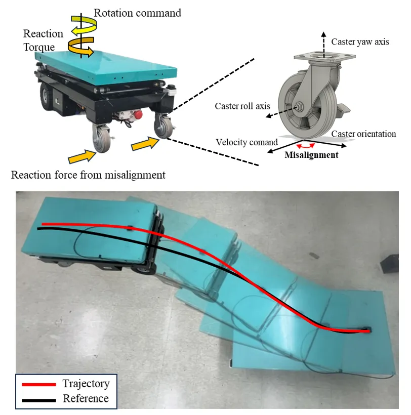
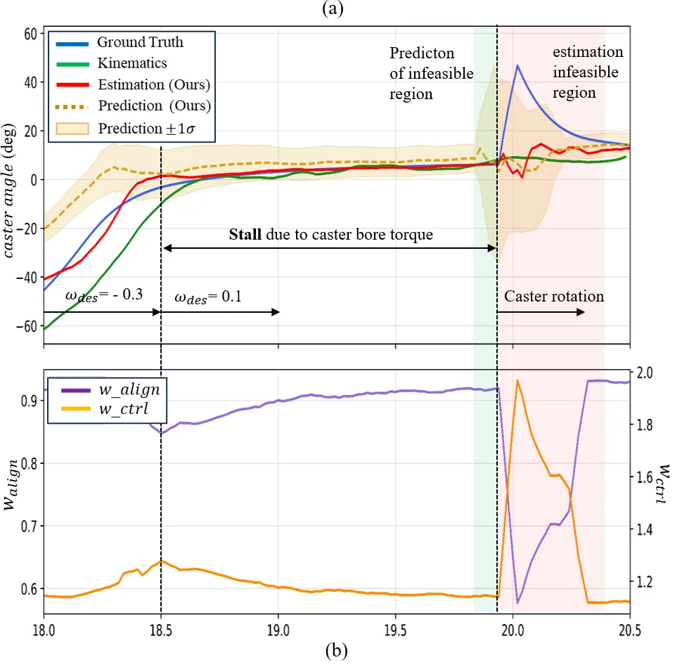
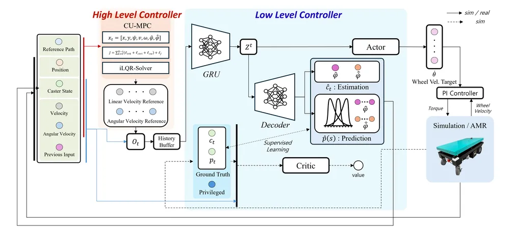
선행 연구의 캐스터 기구학(Arrizabalaga 등). 트레일을 $l_{tr}$, 캐스터 힌지 위치를 $(\Delta x_{cw},\Delta y_{cw})$, 캐스터 선회각을 $\varphi$라 하자. 접촉점의 속도는 아래와 같다.
$${}^b\mathbf v_C=\begin{bmatrix}v-\omega\Delta y_{cw}+\dot\varphi\sin\varphi\,l_{tr}\\ \omega\Delta x_{cw}-\dot\varphi\cos\varphi\,l_{tr}\end{bmatrix}$$
수동 캐스터는 옆미끄럼이 없으므로 선회각이 아래 식을 따라 끌려간다.
$$\dot\varphi=-\frac{1}{l_{tr}}\big[(v-\omega\Delta y_{cw})\sin\varphi-\omega\Delta x_{cw}\cos\varphi\big]$$
정상 상태 각은 $\varphi_{ss}=\operatorname{atan}\frac{\omega\Delta x_{cw}}{v-\omega\Delta y_{cw}}$이고, 해가 π만큼 떨어진 둘이다. MSC는 이 확장 상태와 비용의 기본형을 따른다고 쓰고, 동역학 식과 트레일 값은 적지 않았다.
비용. $J_t=\sum_{k=0}^{N-1}(\ell_{trk}+\ell_{ctrl}+\ell_{cw})+\ell_f$이고, 상태·입력·충돌 회피 제약이 붙는다. $\ell_{cw}$가 이상 정렬과 추정 캐스터 상태의 차다.
불확실성으로 가중치 바꾸기. 예측 분산으로 위험값 $\rho_{t+k|t}=\sigma^2_{\varphi,t+k|t}+\eta\,\sigma^2_{\dot\gamma,t+k|t}$를 만들고, $k=1,\dots,\min(N,H_p)$에서 아래처럼 둔다.
$$w_{cw}(t+k)=w^0_{cw}\big[g_{\min}+(1-g_{\min})e^{-\beta\rho_{t+k|t}}\big],\qquad w_{ctrl}(t+k)=w^0_{ctrl}(1+\alpha\rho_{t+k|t})$$
값은 $g_{\min}=0.15$, $\beta=1.0$, $\alpha=1.4$다. 예측 길이 $H_p=8$이라 63스텝 가운데 앞 8스텝만 바뀐다. 나머지 스텝의 처리는 적혀 있지 않다.
실행 층. 관측은 $\mathbf o_t=[\hat{\dot\varphi}_L,\hat{\dot\varphi}_R,v,\omega,u_{L,t-1},u_{R,t-1},v^{ref},\omega^{ref}]$이고, 이력 16개를 stride 2로 뽑는다. GRU 잠재 상태는 48차원이다. 예측 헤드는 $p(\mathbf x^{cw}_{t+k}\mid\mathbf z_t)=\mathcal N(\boldsymbol\mu_{t+k},\operatorname{diag}\boldsymbol\sigma^2_{t+k})$를 낸다. 손실은 아래와 같다.
$$\mathcal L=\lVert\hat{\mathbf x}^{cw}_t-\mathbf x^{cw}_t\rVert^2+\lambda_r\lVert\mathbf z_t\rVert_1+\lambda_\pi\mathcal L_\pi+\lambda_V\mathcal L_V+\lambda_{pred}\mathcal L_{NLL}$$
무작위화 범위는 바퀴 마찰 0.2–0.9, 캐스터 선회 마찰과 감쇠 각각 0–0.1, 구동 관절 감쇠 10–40이다. 보상 함수, 병렬 환경 수, 학습 스텝, 실행 층의 주기는 적혀 있지 않다.
실험 장비. Lattepanda Sigma, IMU MTi-630R, 2D LiDAR, ROS 2 Humble·Nav2다. 캐스터 선회축에 엔코더를 달아 정답으로 쓴다. 캐스터 트레일, 질량, 하중은 적혀 있지 않다.
… 이 토글의 나머지 블록 2개(문단·식·그림)는 대시보드 리서치 탭의 "자세히: MSC의 방법과 수식" 토글에 있다.
원문.
robot-learning-freiburg/LaGS 저장소의 sge/v1.0 태그다(AGPL-3.0, 가중치는 CC BY-NC-SA 4.0).
IROS 2026 Best Paper·Best Student Paper 결선 10편 중 하나다.YouthZest-Lin/OccTrack360(MIT)이고, 데이터는 HuggingFace YouthZestLin/OccTrack360(약 413 GB, 라이선스 표기 없음)이다.한 줄 요약. 4D panoptic occupancy 추적은 카메라 영상으로 주변 3D 칸마다 클래스와 개체 번호를 매기고, 그 번호를 시간에 걸쳐 유지하는 문제다. SGE는 장면을 가우시안 8,192개의 상태로 들고 가며 "얼마나 잘 봤나"를 쌓아, 지금 가려진 정적 구조를 잃지 않는다. OccTrack360은 어안 카메라용 벤치마크를 내고, 학습과 평가를 관측 가능한 칸으로 한정하는 규약을 다시 세운다.
동작 방식 — SGE.
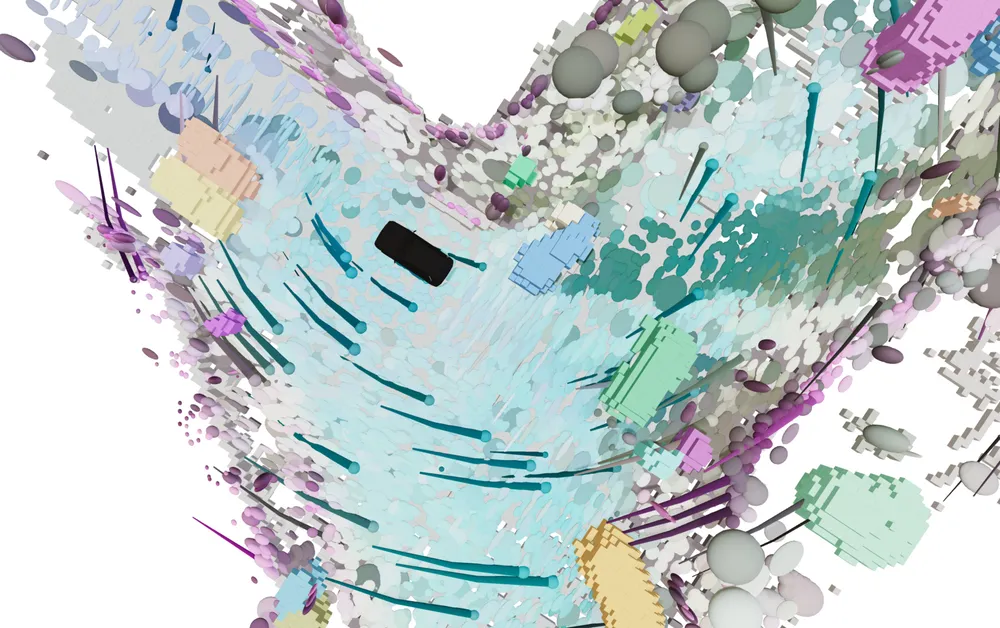
동작 방식 — OccTrack360.
결과.
travplan에 주는 의미.
eval/map_quality.py)도 cost 오차는 관측 칸에서만 잰다. 그러나 치명 재현율은 못 본 치명 칸도 놓친 것으로 센다.
못 본 칸을 평가에서 빼면 지도가 좋아 보이고, 그 칸이 위험했다는 사실은 폐루프의 치명 실패로만 드러난다.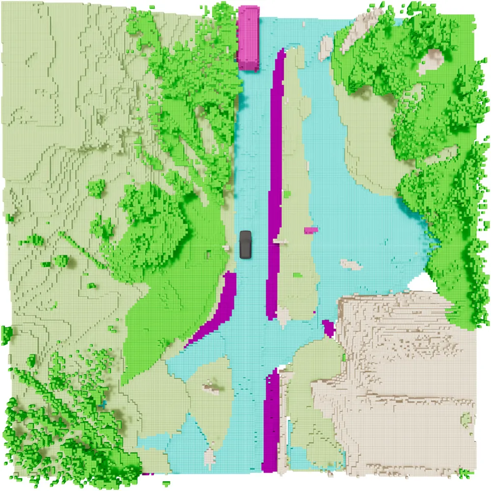
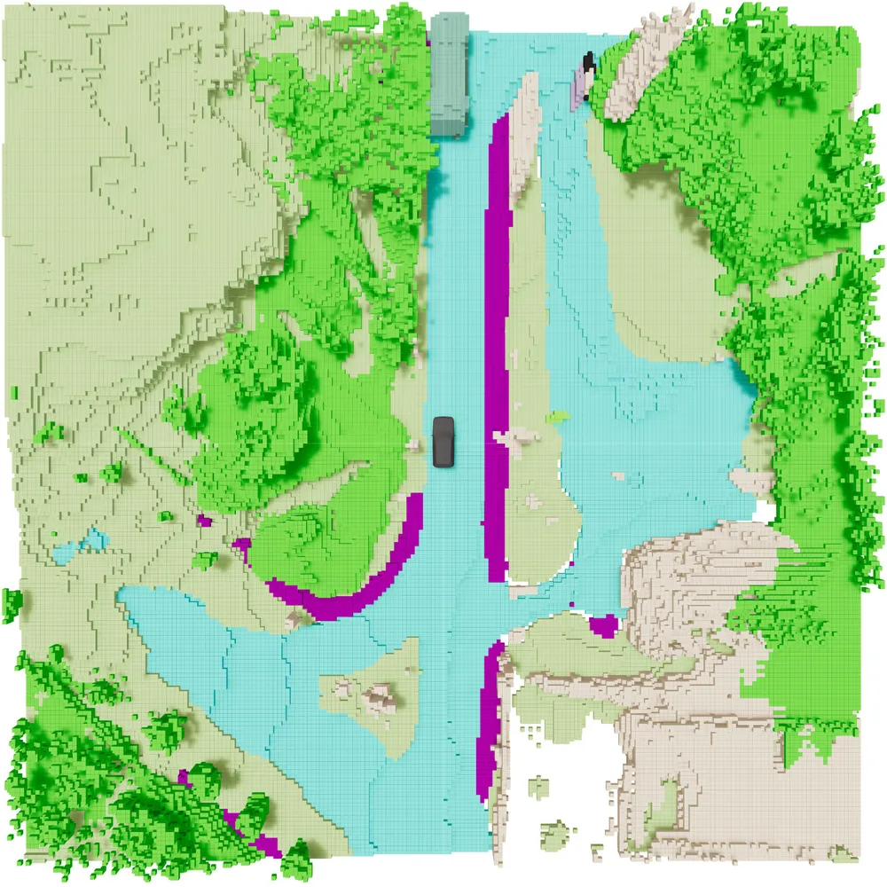
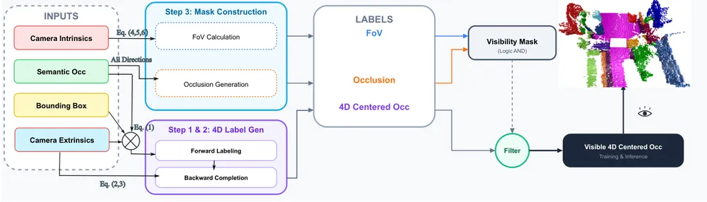
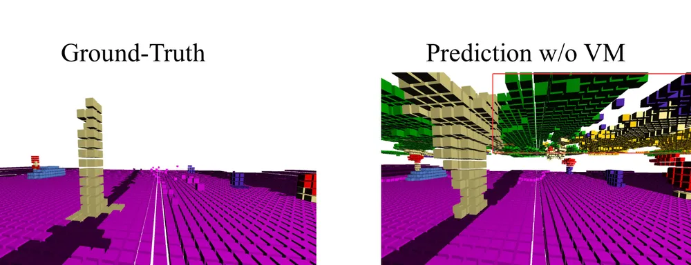
SGE의 상태. latent query $q_k$와 참조 위치 $p_k$를 $K=8192$개 들고 간다(새 query는 최소 2,048개). 각 query는 중심 $\mu_k=p_k+\delta_k$, 공분산, 불투명도 $\alpha_k$, 임베딩, 클래스 logit을 가진 가우시안으로 풀린다. 자차 운동 $T$만큼 $p_k^{(t)}=T\mu_k^{(t-1)}$로 옮기고, 특징은 이동량과 회전각으로 만든 FiLM으로 고친다.
신뢰도. 관측 점수와 누적은 아래와 같다($\lambda=0.8$, $\lambda_{dist}=20$ m).
$$o_k=\alpha_k\,d_k\,\mathbf 1_{FoV}(\mu_k),\quad d_k=\frac{1}{1+\lVert\mu_k\rVert/\lambda_{dist}},\qquad \rho_k^{(t)}=\rho_k^{(t-1)}+\lambda\,o_k^{(t)}\big(1-\rho_k^{(t-1)}\big)$$
동적 클래스로 예측된 가우시안은 매 프레임 $\rho$에 0.9를 곱한다. 자차 운동 보상은 물체의 움직임을 맞추지 못하기 때문이다. $\rho$나 $\alpha$가 0.01 이상이고 관심 영역 안인 query를 남긴다. 넘치면 $\rho$와 $\alpha$의 순위 중 큰 쪽에 비례해 뽑는다. 빈 자리는 현재 프레임 특징의 크기에 비례한 위치로 새로 채운다. 분해 실험에서 신뢰도 없이 불투명도만으로 가지치면 성능이 떨어졌다. 가장 큰 기여는 자차 운동 보상이었다(STQ1 35.8 → 37.9).
깊이 감독. 가우시안을 영상에 alpha 합성해 깊이를 그리고, 희소 LiDAR 깊이와 L1로 맞춘다. $\Omega$는 LiDAR가 맞은 픽셀이다.
$$\mathcal L_{depth}=\frac{1}{|\Omega|}\sum_{u\in\Omega}\big|\hat D(u)-D(u)\big|$$
그래서 가려진 곳의 불투명도가 낮아진다. 출력 격자는 ±40 m, 0.4 m 칸이다. 학습은 8프레임 시퀀스로 하고, 앞 프레임은 손실 없이 상태만 채운다(warmup).
SGE의 평가 범위. 학습 손실은 Occ3D의 카메라 마스크 안에서만 계산하고, 지표도 기본 설정으로 카메라에 보인 칸만 채점한다(코드 sge/v1.0 설정).
그래서 핵심 장점인 "가려진 정적 구조 유지"는 지금 가려진 칸이 채점에서 빠져, 주로 정성 그림으로 보인다.
OccTrack360 라벨. 범위는 ±25.6 m, 높이 −2.0–4.4 m, 0.2 m 칸, 2 Hz, 18 클래스다. 실험은 GPU 메모리 때문에 ±12.8 m로 줄였다.
… 이 토글의 나머지 블록 3개(문단·식·그림)는 대시보드 리서치 탭의 "자세히: SGE와 OccTrack360의 방법과 수식" 토글에 있다.
험지 연구는 "보수적으로 막는 것"에서 "실제로 넘을 수 있는지 데이터로 가르는 것"으로 옮겨 가고 있다. TNT와 POLT가 그 방향이다. 다만 원문을 읽어 보면 근거는 아직 약하다. TNT는 한 코스 10회이고, POLT는 본문이 없다. travplan은 보수적인 최댓값 규칙을 쓴다. 안전 쪽으로는 옳지만, 0.07 m 턱을 막는 오탐(TP-0048, TP-0067)의 뿌리이기도 하다. 두 흐름을 어떻게 화해시킬지가 TP-0057의 결정 사항이었다. 2026-10-03에 기본을 "올리는 쪽만"으로 두고, 낮추는 쪽은 치명이 늘지 않는지로 판정하는 선택 실험으로 남겼다. 다섯 편을 읽은 뒤에도 이 결정은 그대로다.
두 번째 흐름은 못 본 칸을 다루는 법이다. OCRA는 표본 배분에, SGE는 시간에 걸친 신뢰도에, OccTrack360은 평가 범위에 쓴다. travplan은 못 본 칸을 지금 cost와 σ로만 다룬다. 가림 줄의 RayOcc와 OGM-CBF는 인식과 제어에서 "못 본 것을 어떻게 들고 갈 것인가"를 다룬다. travplan의 그림자 상한·깊이 prior와 비교할 값이 있다.
세 번째는 계획과 실행의 간극이다. MSC와 travplan은 같은 원인(실행 층의 지연)을 다른 방법으로 메운다. MSC는 학습으로 흡수하고, travplan은 rollout에 지연을 넣는다.
다음에 해 볼 것(제안이다. 아직 TP로 열지 않았다).
| 순서 | 시험 | 가져올 것 | 판정 |
|---|---|---|---|
| 1 | plant 레벨 3 멈춤에서 표본 배분 | OCRA | 경사로를 뺀 시간 초과가 짝 비교로 줄고, 치명이 늘지 않는다 |
| 2 | TravNet 라벨에 속도 어긋남을 더한다 | TNT | TP-0059와 함께. 기하 cost보다 나빠지지 않는다 |
| 3 | belief 칸의 관측 신뢰도를 σ에 넣는다 | SGE | 보행자 조건의 짝 비교, 치명이 늘지 않는다 |
| 4 | 불확실성으로 가중치를 바꾸는 CostTerm |
MSC | 잔차 GP 분산으로, plant 조건의 짝 비교 |